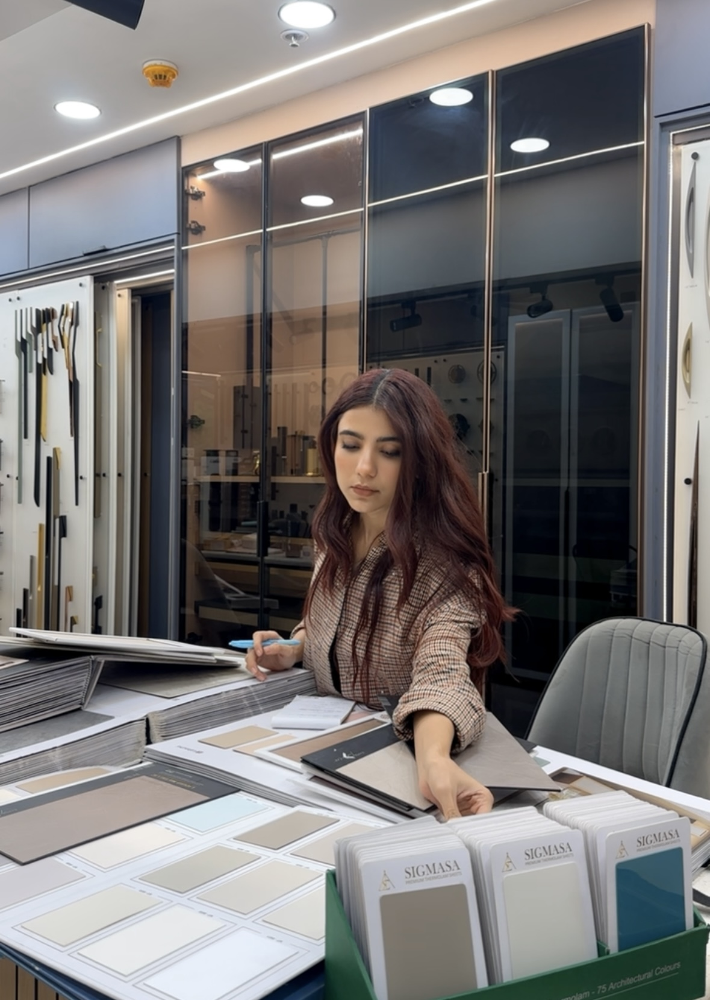

THE
STUDIO
A considered approach to spaces, shaped by heritage, curiosity and craft.

Nazia Sayyed Studio draws from a family legacy in construction, engineering, and interior design, bringing generations of practical knowledge and craftsmanship into a practice shaped by an independent creative vision.
Rooted in this heritage yet guided by a forward-looking perspective, the studio approaches each project with curiosity, clarity of thought and a pursuit of design excellence. For the studio, luxury extends beyond appearance. It lies in the balance of comfort, restraint and individuality; in the considered use of materials, the intelligence of a space and the details that shape its experience.
Every project begins with its own set of possibilities, informed by the client’s vision, the character of the space and its intended purpose. Free from the constraints of passing trends, the studio embraces creative exploration to develop interiors that feel distinctive, purposeful and enduring.
A commitment to quality, craftsmanship and thoughtful execution underpins every aspect of the studio’s work. With an ambition to build a globally recognised design house, Nazia Sayyed Studio looks beyond individual projects towards a lasting body of work—one that honours its origins, expresses a clear creative identity and contributes its own perspective to the evolving language of design.

Design begins
with curiosity.
Founded by Nazia Sayyed, the studio reflects her instinct to observe, question, and explore the world through design. Drawn to art, architecture, materials, and the subtleties of human experience, she finds inspiration in the unexpected—in the character of a material, the geometry of a form, the interplay of light and shadow, and the possibilities that emerge when familiar ideas are seen differently. For Nazia, creativity is not confined to a particular aesthetic or way of thinking; it is an ongoing pursuit of new perspectives, distinctive expressions, and spaces that leave a lasting impression.
Her approach is guided by the belief that exceptional design requires both imagination and intent. Beyond appearance, she is interested in how spaces are experienced, how details influence perception, and how a creative vision can be translated into something tangible, personal, and enduring. With an ambition to contribute to a wider design dialogue, Nazia continues to explore the boundaries of her own practice, driven by the pursuit of work that is individual in its expression, considered in its execution, and uncompromising in its vision.